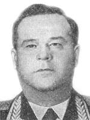

Шапошников Александр Иванович
С сайта Биографии летчиков — Героев Советского Союза

Шапошников Александр Иванович - Генерал-майор авиации, Герой Советского Союза (1942).Родился 24.8.1912 в поселке Лысково, ныне город Нижегородской области в семье рабочего. Русский. Член КПСС с 1938. Окончил 10 классов. Работал токарем на заводе имени Ленина в городе Горький.
В Советской Армии с 1934. В 1935 окончил Военно-авиационную школу пилотов.
Участник советско-финляндской войны 1939.
Участник Великой Отечественной войны с июня 1941.
Заместитель командира эскадрильи 751-го авиационного полка (17-я авиационная дивизия, ДБА) капитан Шапошников к январю 1942 совершил 93 боевых вылета (из них 80 ночью) на бомбардировку военно-промышленных объектов противника.
Звание Героя Советского Союза присвоено 29.3.1942.
После войны продолжал службу в ВВС. В 1955 окончил Военную академию Генштаба. С 1957 — генерал-майор авиации.
Награжден 2 орденами Ленина, 3 орденами Красного Знамени, орденами Суворова 3 степени, Александра Невского, Трудового Красного Знамени, Красной Звезды, медалями.
Умер 10.01.1967.
Похоронен в городе Керчь Крымской области.
Его именем названы улица в Нижнем Новгороде, улица и школа рабочей молодежи в Лысково.